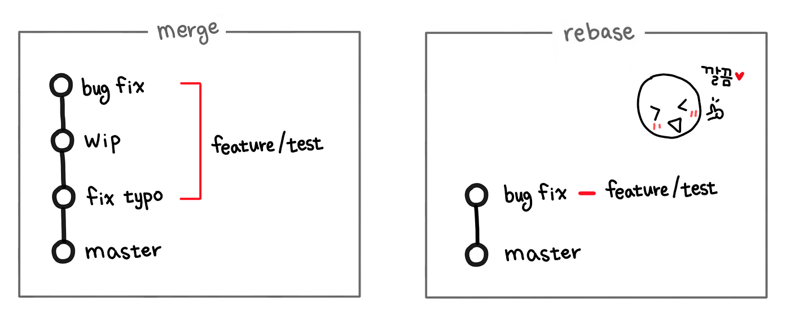

Git/Github
git config 설정 확인 및 변경하기
git config에 대한 리스트를 보고자 하는 경우에는 아래와 같은 커맨드를 입력한다.
git config --list
git config 설정하는 방법 중에 가장 많이 쓰이는 것이 이름과 이메일 변경이다. 이 경우에는 아래와 같이 수정한다.
git config --global user.name "고양이"
git config --global user.email "hbd9425@gmail.com"
참고로 한글이 깨지는 경우에는 아래와 같이 입력한다.
git config --global core.quotepath false
Jekyll
GitHub Pages 배포 및 테마적용
사전 준비
- Ruby 설치
- Jekyll 설치
- 테마 선택
- 코드블럭 선택
배포 및 테마 적용하기
-
github repository 생성
- repository명은 github 아이디.github.io로 생성할 것
- repository는 public 으로 할 것
- ex) parklego.github.io
-
bundle 명령어 실행
bundle install bundle exec jekyll serve -
블로그 설정
- _conif.yml 파일에서 제목이나 이름 등을 변경
- Gemfile 플러그인 설치하는 곳
siteamp 파일 생성
-
Gemfile 파일에서 아래 코드 추가
gem 'jekyll-sitemap' -
_config.yml 파일에서 아래 코드 추가
plugins: -jekyll - sitemap; - Terminal 에서
bundle입력. -
Terminal 에서 아래 명령어 입력
gem install jekyll-sitemap -
지킬 서버 재실행
bundle exec jekyll serve
commit 깔끔하게 남기기
main branch에 다른 branch를 병합할 때, 쓰이는 방법은 두 가지이다.
하나는 merge, 그리고 다른 하나는 rebase이다. 이 둘의 가장 큰 차이는 깔끔함에 있다.

merge를 사용하면 모든 commit을 남기게 되지만, rebase를 사용하면 필요없는 commit을 생략시킬 수 있다.
예제를 통해 알아보기
-
첫 작업을 완료 후 아래와 같이 commit을 남겼다.
git add . git commit -m '테스트 추가' -
두 번째 작업을 완료 후 아래와 같이 commit을 남겼다.
git add . git commit -m '테스트 추가 2' -
세 번째 작업을 완료 후 아래와 같이 commit을 남겼다. 그리고 해당 작업이 끝나서 push를 해야하는 상황이다.
git add . git commit -m '테스트 추가 3' -
commit을 정리하기 전에 git log를 통해 몇 개의 commit을 정리할지 파악한다.
여러 날에 걸쳐서 작업된 경우에는 몇 개의 commit을 했는지 파악하기 힘들기 때문이다.
git log -
push 하기 전에 rebase로 불필요한 commit을 정리할 수 있다.
git rebase -i @~3 // -i는 --interactive 옵션이고 대화형으로 진행한다는 뜻이다. // @~3은 root(최근)를 기준으로 3개의 commit을 rebase하겠다는 뜻이다. // HEAD~3과 같은 뜻이다. -
rebase 편집 화면. i를 눌러 수정모드에서 7번 과정처럼 변경한다.
pick 74cd541 test 추가 pick a6d2a9f test 추가 2 pick e5e93ab test 추가 3 # Rebase 83ffc92..e5e93ab onto 83ffc92 # # Commands: # p, pick = use commit # r, reword = use commit, but edit the commit message # e, edit = use commit, but stop for amending # s, squash = use commit, but meld into previous commit # f, fixup = like "squash", but discard this commit's log message # x, exec = run command (the rest of the line) using shell # # These lines can be re-ordered; they are executed from top to bottom. # # If you remove a line here THAT COMMIT WILL BE LOST. # # However, if you remove everything, the rebase will be aborted. # # Note that empty commits are commented out -
편집을 하고 :wq로 vi를 빠져나온다.
pick 74cd541 test 추가 s a6d2a9f test 추가 2 // pick -> s (squash) s e5e93ab test 추가 3 // pick -> s (squash) # Rebase 83ffc92..e5e93ab onto 83ffc92 # # Commands: # p, pick = use commit # r, reword = use commit, but edit the commit message # e, edit = use commit, but stop for amending # s, squash = use commit, but meld into previous commit # f, fixup = like "squash", but discard this commit's log message # x, exec = run command (the rest of the line) using shell # # These lines can be re-ordered; they are executed from top to bottom. # # If you remove a line here THAT COMMIT WILL BE LOST. # # However, if you remove everything, the rebase will be aborted. # # Note that empty commits are commented out -
그 다음 vi로 commit을 수정할 수 있게 된다.
# This is a combination of 3 commits. # This is the 1st commit message: test 추가 # This is the commit message #2: test 추가 2 # This is the commit message #3: test 추가 3 # Please enter the commit message for your changes. Lines starting # with '#' will be ignored, and an empty message aborts the commit. ... -
최종 commit 메세지를 수정하는 것이므로 그냥 다 삭제하고, commit 메세지를 작성한다.
→ shift + v로 블럭설정 모드로 들어간 뒤 shift + 커서로 모두 지정하고, dd를 눌러 삭제를 한다.
-
rebase 완료
Successfully rebased and updated refs/heads/main.
간단하게
git switch main
git merge --squash 브랜치명
git commit -m '메세지'
ssh key 생성
Git 서버들은 SSH 공개키로 인증을 한다.
-
SSH 공개키 확인
$ cd ~/.shh $ lsid_dsa 혹은 id_dsa.pub 파일이 있으면 공개키가 생성된 적이 있는 것이다. 없다면 생성을 하자.
pub확장자를 가진 파일은 공개키이므로 공개되어도 괜찮지만, 다른 파일은 개인키이므로 각별히 주의하자.
-
SSH 공개키 생성
$ ssh-keygen생성할 때, 묻는 질문이 있는데 그냥 엔터를 계속 눌러서 진행하자. 그러면 생성 될 것이다.
위의 커맨드를 이용해서 잘 생성되었는지 확인하고, 넘어가자.
-
Git에 SSH key 등록
$ cat id_rsa.pub위의 커맨드를 이용해서 값을 복사한다.
그 이후, github setting으로 들어간다.
ssh and GPG keys라는 탭으로 들어가서, new ssh key 버튼을 눌러 복사한 값을 넣어주면 끝.